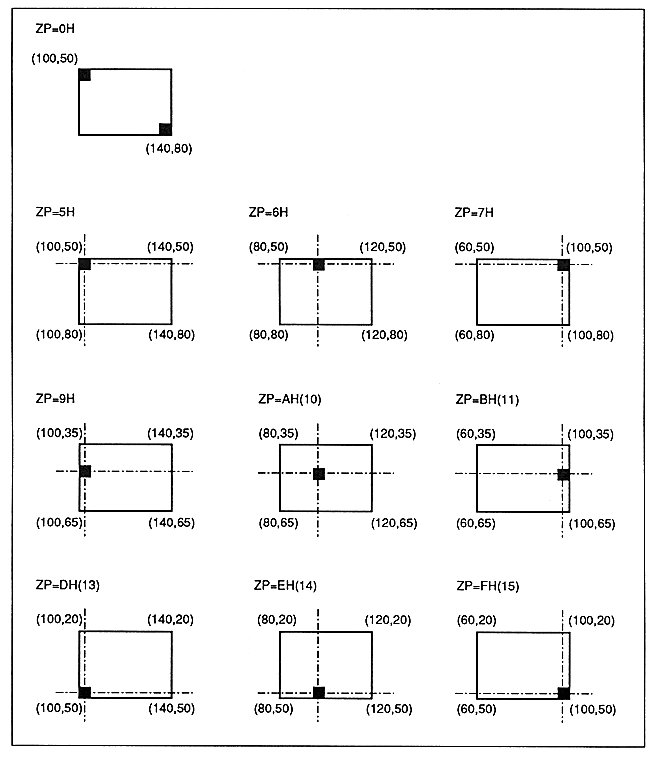

When the fixed point coordinates are (100, 50) and the display width is (40, 30), the coordinates of each vertex are as follows. However, it is assumed that up / down / left / right inversion is not specified. When the zoom point (ZP) is 0H, the vertex is (100, 50) and the vertex is (140, 80).
Figure 6.3 Zoom point and drawing area
